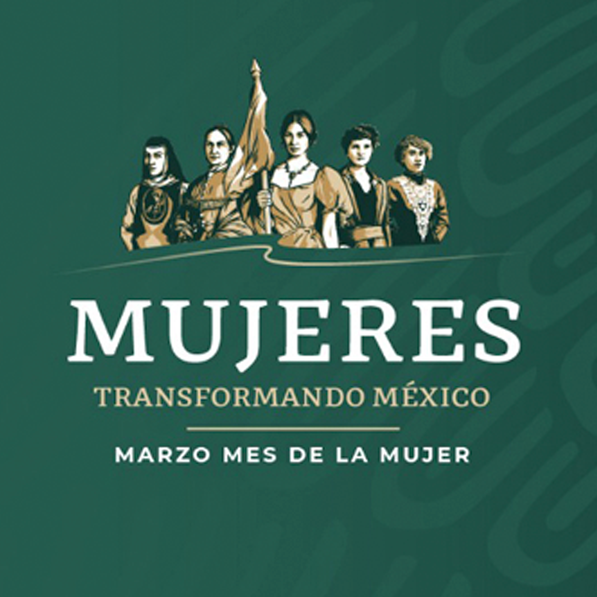
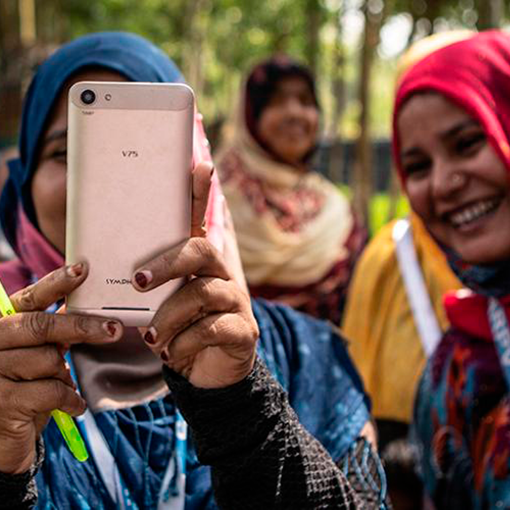

Durante siglos las mujeres de cada época y de diversos países han luchado e
insistido por sus derechos; igualdad laboral, igualdad salarial, derecho al voto y a mejores condiciones
de vida que les permitan participar en la sociedad, la economía, la política y en todos los ámbitos
en pie de igualdad con el hombre.
Por ello, cada 8 de marzo se conmemora en el mundo la lucha de las mujeres por la igualdad,
el reconocimiento y ejercicio efectivo de sus derechos, el cual se hizo oficial en 1975 por las
Naciones Unidas.

Cada 8 de marzo es indispensable reivindicar la lucha de todas la mujeres que han soñado y que hoy siguen
construyendo países diferentes. Tomando en cuenta que su valentía nos recuerda que otro mundo
es posible si retomamos las demandas históricas que han retrasado la participación de las mujeres
en los diferentes espacios; educativos, económicos, sociales, culturales y políticos.
Escuchar y hacer valer sus voces, experiencias y aportaciones significa derribar las
barreras que impiden el ejercicio de sus derechos y con ello erradicar cualquier tipo de
violencia y discriminación en su contra.